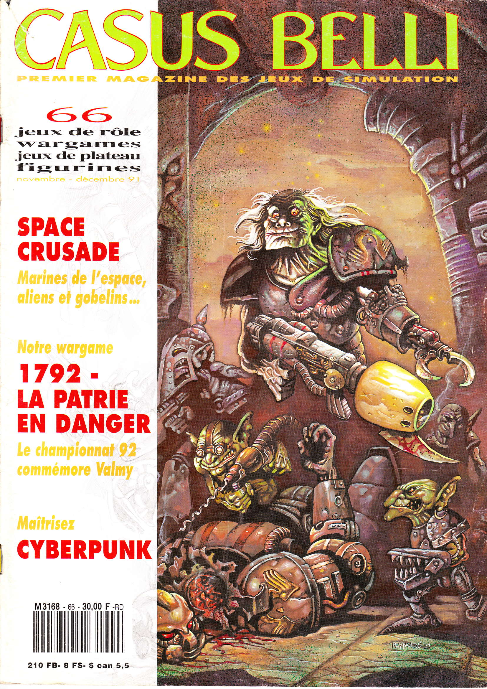
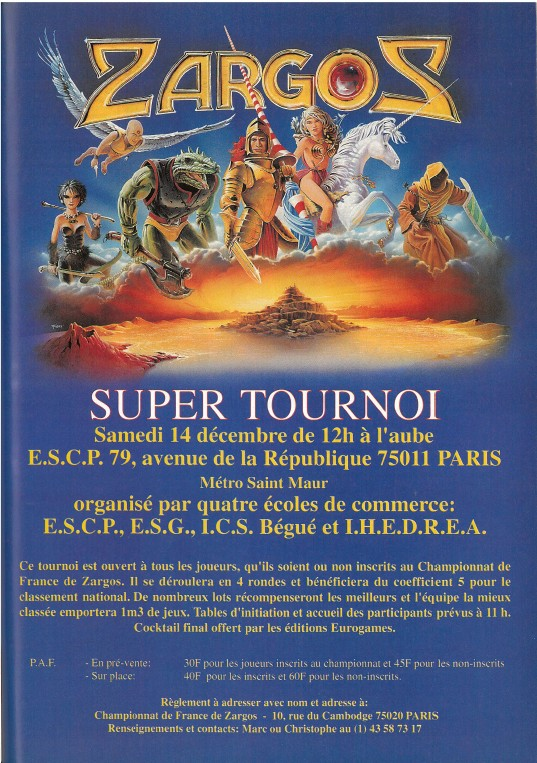
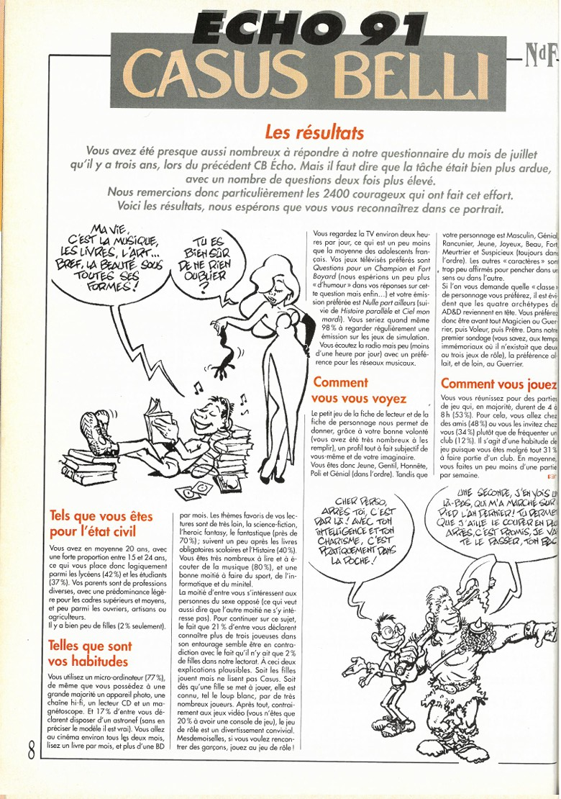
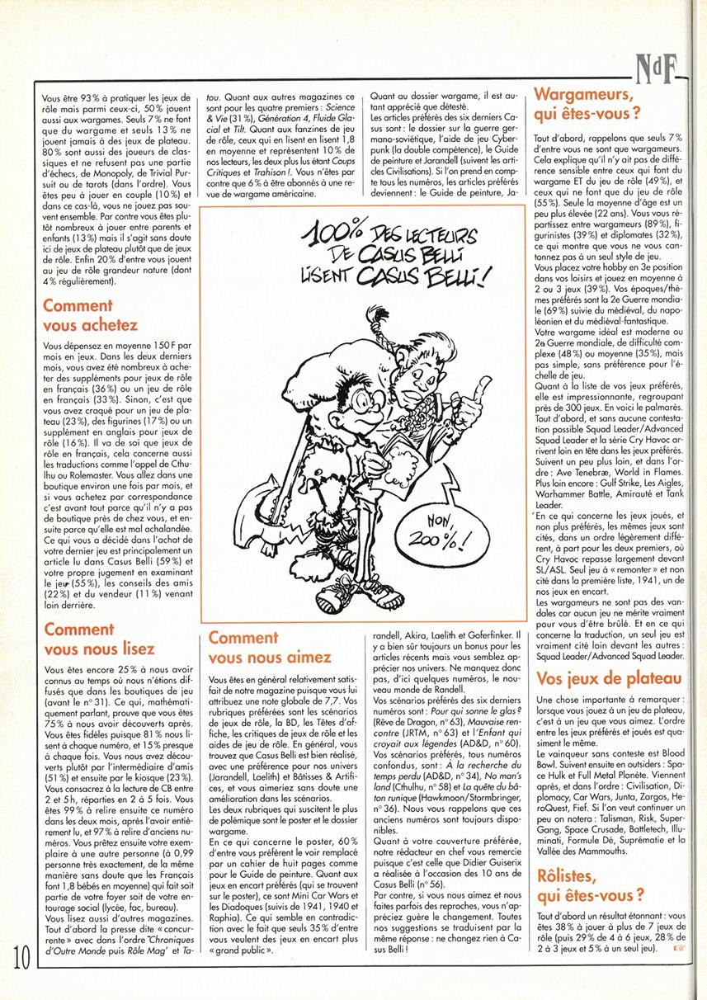
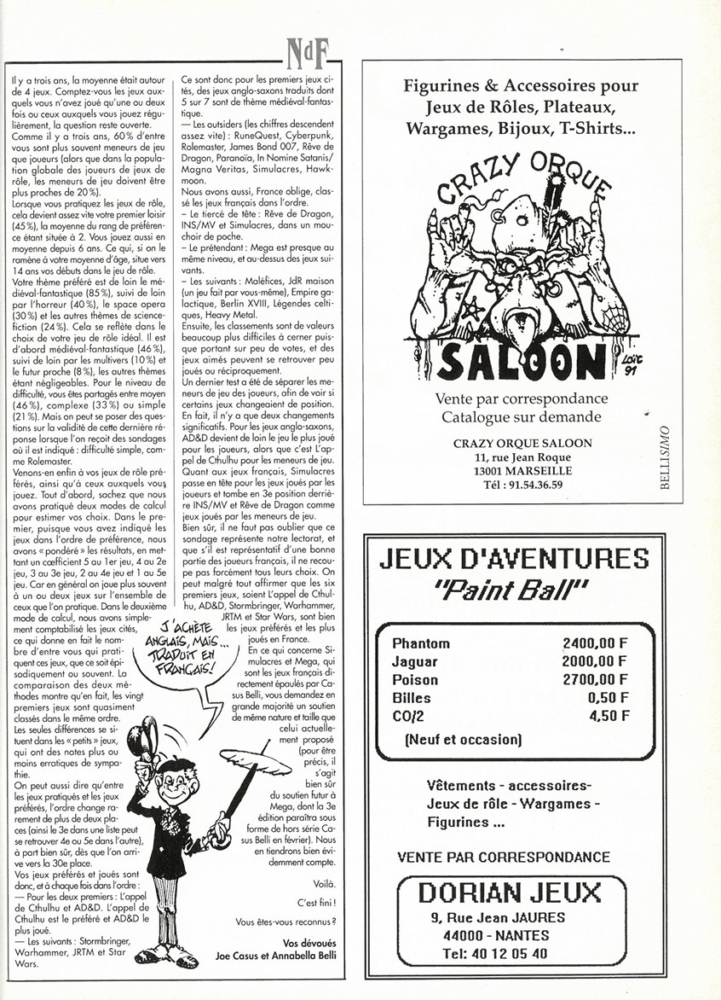
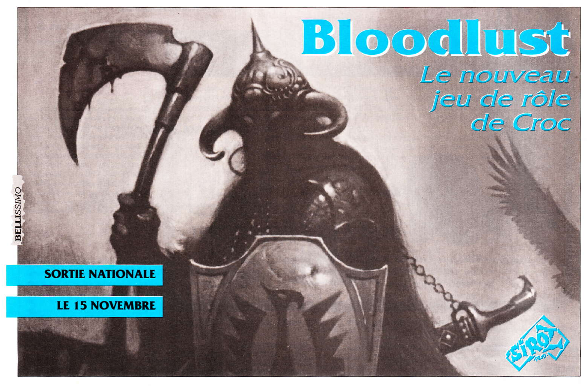
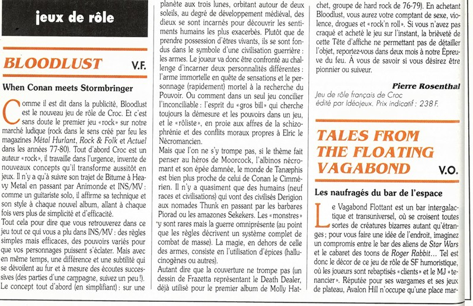
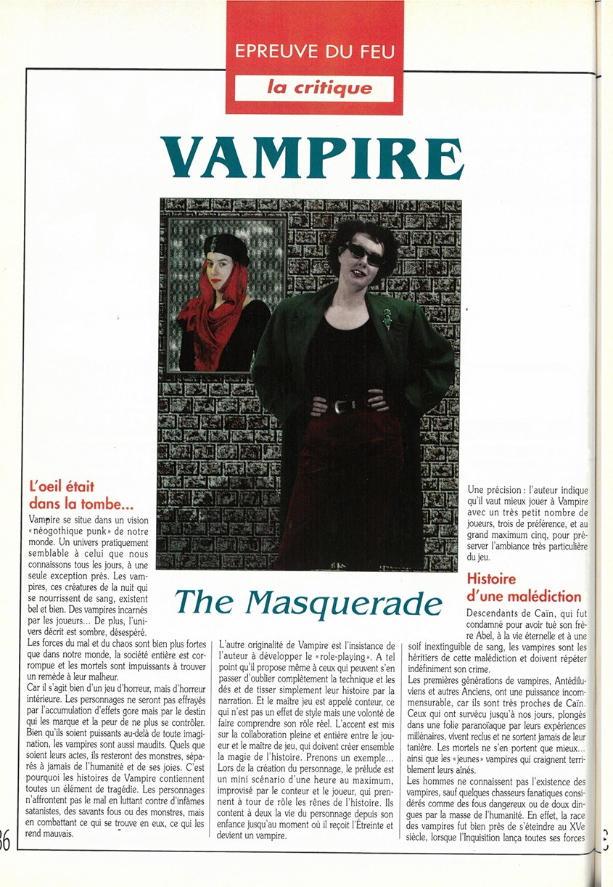
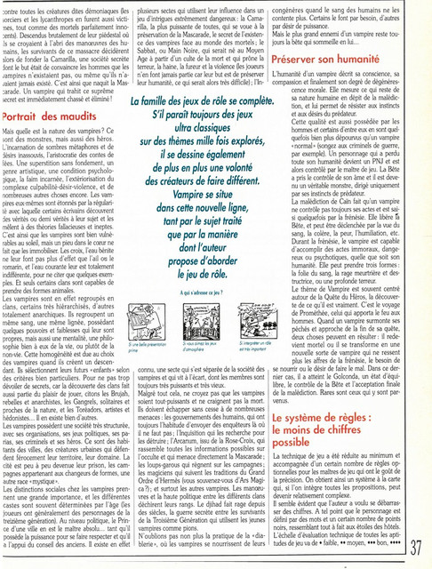
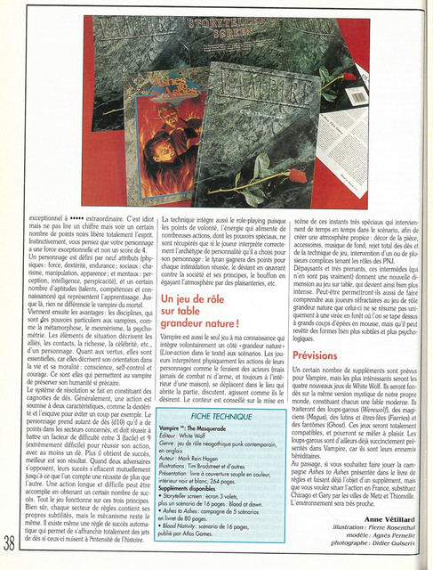

Cette revue est naturellement dédiée à la mémoire de Pierre, et ce Casus 66 comportera quelques clins d’œil, même si je ferai une partie dédiée sur Pierre en complément.
Ainsi s’achève donc cette année 1991, que je vais marquer avec l’événement le plus symbolique, et qui intervient à la toute fin de l’année : le 25 décembre Mikhaïl GORBATCHEV annonce sa démission, et le 26 décembre, l’URSS est dissoute et disparaît dans les greniers de l’Histoire. https://www.ina.fr/ina-eclaire-actu/video/cab91068346/demission-de-mikhail-gorbatchev
Seulement, tout le monde se trouve entre la dinde et le marron à ce moment de l’année, et surtout cette entité qui aura marqué le XXème siècle est en état de mort clinique depuis le putsch du mois d’août, si ce n’est depuis bien plus longtemps… L’information est donc accueillie avec une relative indifférence alors qu’elle ouvre une ère pleine de périls sur le devenir de l’arsenal nucléaire hérité de l’Empire Soviétique.
Si les guerres civiles se sont apaisées en Amérique Centrale, elles se sont redéplacées vers l’est : d’abord l’Europe où elles s’intensifient en Yougoslavie ; puis l’Algérie qui va bientôt connaître ce funeste destin en cette même fin d’année, où le Front Islamique du Salut vient de remporter triomphalement le premier tour des élections législatives. La décennie noire est alors prête pour débuter avec la nouvelle année…
Derrière cette tragédie, il faut y voir les prémisses de ce qui dessinera notre XXIème siècle : la résurgence de l’islam politique, affaibli pendant de longues années par les régimes nationalistes et laïcs du monde arabe. A cela, il fallait être capable de discerner il y a 35 ans plusieurs signaux faibles convergents : la faillite morale et économique des régimes autoritaires en question, un Afghanistan pris lui-même dans une guerre civile sans merci – et dont tout le monde se désintéressait depuis le départ des soviétiques – et qui libérerait ses moudjahidines endoctrinés ; et une Guerre du Golfe encore très récente, mais dont le débarquement massif des troupes occidentales dans les bases d’Arabie Saoudite semblait préfigurer le retour des croisés sur les lieux saints de l’Islam.
Avec la désagrégation de l’Empire Soviétique et d’un monde bipolaire, et un Occident qui voulait désormais croire à la Fin de l’Histoire, tout cela ouvrait un boulevard pour que de nouvelles forces se développent et croissent à l’échelle mondiale.
Mais en ce Noël 1991, qui avait déjà cette lecture ? Et pourtant, symboliquement, d’autres signes apparaissaient : alors que l’URSS disparaissait, quelle place prendrait la Russie avec cet encombrant héritage ? C’est en effet déjà à cette période que les séparatistes russophones de Moldavie instaurent la Transnistrie.
Et alors que les U$A semblent être devenus l’unique superpuissance hégémonique, avec la victoire dans la Guerre du Golfe et la Guerre Froide, la liquidation de la compagnie aérienne Pan Am en ce même mois de décembre 1991, représentative du soft power planétaire de l’Oncle $am, vient rappeler des fêlures qui prendront une toute autre dimension 10 ans plus tard.
On finira de clôturer cette année 1991 avec un volet artistique : il n’y a pas que les gothiques et les grunges qui dominent, en France c’est aussi l’émergence du rap (le premier album de NTM date de juin et un concert au Zénith de Paris est prévu pour janvier), sans que la scène rock ne soit pour autant diminuée. Le décès de de Freddie Mercury des suites du SIDA arrive comme un coup de tonnerre fin novembre, juste avant que l’album Dangerous de Michael Jackson ne sorte. Je terminerai donc cette revue de 1991 avec le clip emblématique de ce dernier, resté mythique pour sa longueur et sa scène de fin, et annoncé et diffusé sur les chaînes de TV comme s’il s’agissait d’une émission spéciale (ça vous rappelle des souvenirs ?) :
Et voici maintenant le Casus qui vient lui-même clôturer cette année 1991, sous une couverture de Reynolds dont le nom ne me parle pas du tout, si cela évoque à certains plus de références ?

Fêtes de Noël et de Nouvel An approchant, le calendrier des événements est redevenu beaucoup plus sage par rapport à l’exubérance des numéros précédents. Je mettrai ici surtout en lumière l’essor encore timide des jeux de plateau, avec un championnat de Zargos décidément à la mode de cette année 1991 et une autre convention à Paris, réunissant autour de Diplomacy, Imperium Romanum, Blood Bowl et (encore) Zargos, ainsi que quelques wargames (dont World in Flames).

La partie rédactionnelle de ce numéro est majoritairement occupée par le résultat – copieux – du sondage initié lors de cette année 1991. Je vous laisse retrouver les différents archétypes du rôliste 1991 que vous étiez peut-être, ou que vous découvrirez pour l’occasion.



Peu d’autres informations de la rédaction sinon, à part la parution de L’Île des Morts pour faire plaisir à @Damien Coltice , ou la mise en avant du super chouchou de @Tristan dans les Zines avec Unspeakable Oath, et dont les rédacteurs sont promis à une belle carrière à venir dans les Cthulheries, encore relativement confidentielles à l’époque.
Pas de courrier de lecteurs aigris pour cette fois-ci, et je zappe la partie Minitel essentiellement consacrée pour ce numéro à vous faire passer de longues heures et vider votre porte-monnaie sur le 3615 CASUS avec tout plein de concours, jeux chronophages en interface texte et murs à lire pendant de longues heures, tandis que la facture s’affole à 1,29 FF la minute !!
On passe donc aux sorties ludiques, pour préparer les paquets cadeaux à venir. En écho à la référence au lapin blanc dans l’édito, on commencera avec Eurogames et sa série de wargames d’initiation Etoile Rouge contre Croix Noire pourtant déjà chroniquée dans Casus (normal puisqu’elle sera écrite par Franck Stora), et annoncée sur tout 1991 pour être encore « sur le point de sortir », comme un mauvais financement participatif. Ludodélire continue de développer Formule Dé avec la sortie du circuit de Magny Cours, à l’époque où il y avait encore un Grand Prix de France, et même une écurie française avec Ligier !
On passe sur les jeux de rôle pour retrouver à nouveau Ludodélire, qui gère Rêve de Dragon et vient de sortir le très atypique Le Monde de Rêve de Dragon (avec une couverture assez hideuse de Bernard Bittler pourtant, mais qui ne semble pas fait pour la couleur) : malgré son titre trompeur, il ne s’agit donc pas de la description d’un univers fermé pour le jeu, mais d’une compilation de tous les éléments de règles parus dans les Miroirs des Terres Intermédiaires. Hexagonal continue pour sa part sur JRTM avec Les Ents de Fangorn. Quant à Hurlements, ce jeu mythique est relancé avec la création des éditions de la Lune Sang, et la sortie de Hurlelune n°4. Malgré une période propice aux achats, il n’y a plus d’autres petits éditeurs français dans les prévisions de cette fin d’année ! Le climat économique qui a commencé à fortement se dégrader semble avoir dévasté le paysage rolo-ludique.
J’aurais voulu aussi basculer Oriflam dans les plus gros éditeurs qui maintiennent mieux le cap mais bizarrement, à l’exception de Chrome pour Cyberpunk, la rafale de sorties suivantes sont annoncées après Noël : Les Sorciers de Pan Tang pour Stormbringer, la Kamarg pour Hawkmoon, Les Secrets Oubliés pour Runequest… Drôle de timing.
Pour trouver donc de la production pour cette fin d’année, on se contentera des frères ennemis Jeux Descartes et Siroz Production. Pour le premier, d’abord du James Bond (le mauvais scénario Dangereusement vôtre), du TORG avec la Cyberpapauté, qui intègre dans sa VF l’autre supplément VO consacré au Réseau Divin, ou le Guide de l’Alliance Rebelle pour Star Wars ; pour Warhammer, l’écran (à 38 FF !) et la campagne Le Seigneur des Liches. Et dans le rayon du Lapin Blanc, l’annonce de l’arrêt de la gamme SimulacreS par Descartes, ce qui bloquera les sorties pourtant promises (et manifestement bien avancées) de SangDragon et Animonde.
Chez le second, le choix est également au rendez-vous : un nouvel écran INS / MV pour toujours la 1ère édition du jeu, Berliner Nacht pour Berlin XVIII (de Tristan) et Killing Technology pour Heavy Metal, et surtout la sortie de Bloodlust annoncée avec non seulement renfort de publicité…

… mais aussi une Tête d’Affiche en anticipation dans les colonnes de ce Casus, Siroz ayant déjà envoyé une sortie presse à Pierre Rosenthal !

Même si à cette époque, Siroz est encore une boîte de punks gérée comme des punks, on devine le sens du business affûté de Marc Nunes avec ce plan « marketing » (ce qui aboutira à l’ogre Asmodée), et qui va permettre à Bloodlust d’être LE succès de cette fin d’année 1991, et compensera l’échec de début d’année de Heavy Metal (dont Killing Technology sera d’ailleurs le dernier supplément).
En contre-exemple absolu sur la scène francophone, mais ce qui aura probablement permis l’éclosion de plein d’autres jeux sous nos latitudes, on a TSR qui gère péniblement depuis sa base UK directement la VF de (A)D&D. Alors que le PHB est enfin reparu après près de 2 ans de vide intersidéral, il est resté orphelin puisque le DMG en français n’est annoncé que pour cette fin d’année. On notera également la tentative avortée d’Hexagonal pour reprendre l’ancêtre (et qui n’aura eu que la VF du magazine Dragon en lot de consolation), puisque la nouvelle boîte d’initiation D&D sera finalement commercialisée en VF directement par TSR, là encore en ratant magistralement l’opportunité de Noël puisqu’elle est annoncée pour février 1992…
On peut passer maintenant sur les VO. Chaosium continue sa production sur le Pays de Lovecraft avec Kingsport et le recueil de scénarios Tales of the Miskatonic Valley. Et comme il n’y a jamais assez de scénarios pour l’AdC, le recueil suivant – Fearful Passages – est annoncé peu après pour 1992. Et malgré l’excellente 4ème édition, qui est pour moi mon édition de référence, il est aussi annoncé pour l’année suivante la future 5ème édition… Stormbringer continue également sur un rythme soutenu avec Sorcerers of Pan Tang et Perils in the Young Kingdom. Enfin, Pendragon a aussi son recueil de scénarios avec Blood & Lust, à ne pas confondre avec le JDR de CROC comme Casus nous le rappelle…
FASA continue de développer lentement mais sûrement Shadowrun, que ce soit en supplément ou en scénario, avec respectivement les Native American Nations et Total Eclipse. Du côté de chez ICE, on mise toujours sur Tolkien avec la boîte d’introduction non pas de l’Anneau Unique mais de Lord of the Rings Adventure Game, version allégée et manifestement salutaire de JRTM, annoncée elle aussi en traduction chez Hexagonal, et malheureusement jamais traduite alors que le produit semblait être une excellente alternative pour faire de la Terre du Milieu, avec une version de système plus appropriée. Probablement qu’à cette époque où il était illusoire de produire les accessoires dans la machine chinoise, Hexagonal n’avait pas les reins assez solides pour se lancer sur une production de ce type…
(Lien si l’image ne s’affiche pas = https://www.legrog.org/visuels/details/2445.jpg)
ICE mise aussi sur Rolemaster, à la fois le canal historique avec le Spell User’s Companion et le canal générique (à la GURPS quoi) avec Outlaw pour jouer dans une ambiance Western. Rappelons qu’en cette fin décennie 1980 / début décennie 1990, le renouveau du JDR était pas mal attendu pour trouver un système de règles qui permettrait de les unifier tous, et que TSR avait aussi une stratégie un peu similaire avec AD&D et ses suppléments à couleur verte. Mais maintenant que Vampire vient de débouler, on sait où va se produire réellement le renouveau du JDR.
Pendant donc de ICE, Steve Jackson Games continue à développer GURPS : l’écran, le Space Atlas 4 pour GURPS Space, et surtout Roleplayer qui évolue maintenant en un (petit) magazine à part entière avec plein de matos supplémentaire. Chez Talsorian, cela tourne maintenant au ralenti avec tout de même la sortie de l’emblématique Night City. Après avoir longtemps été annoncé chez cet éditeur, le jeu de rôle sur Ambre se profile maintenant chez un nouvel éditeur créé pour l’occasion, Phage Press dont on reparlera au prochain numéro.
Planning calme aussi chez West End Games avec uniquement du TORG (Space Gods et Kanawa Heavy Personal Weapon) et pas d’annonce chez White Wolf, mais la copieuse Epreuve du Feu écrite par Anne plus loin évoque la sortie de la fameuse campagne Ashes to Ashes (et je me demande si Blood Bond n’est pas sorti un peu antérieurement @Coulis ?). Et comme je vous invite toujours à suivre les traces du début de la révolution JDR qu’apporte Vampire, n’hésitez pas à vous référer aussi à la pastille de Coulis sur cette campagne Ashes to Ashes, et comment elle a traversé le poids des ans :
On termine enfin avec TSR. D&D est encore supporté par l’éditeur mais d’une curieuse manière : après la nouvelle boîte noire d’initiation, ultra simplifiée et qui ne restera pas dans les mémoires comme a pu l’être la boîte rouge (aura-t-elle été au Basic ce que la 4ème édition a été à (Advanced) D&D ?), TSR sort en contrepoint le Rules Cyclopedia, énorme pavasse qui compile en un seul ouvrage le BECMI sans le I, mais avec le background et la cosmogonie de Mystara. On en reparlera là aussi au prochain numéro, quand le livre aura atteint les rivages de Casus.
TSR met donc D&D dans un placard sans signifier la fin de la gamme, pour surtout se recentrer sur AD&D où c’est toujours le foisonnement autour des différents univers créés et maintenant bien installés : Anauroch pour les Forgotten Realms, Wild Elves pour Dragonlance, Goblin’s return pour Spelljammer, et même Greyhawk avec Wars. Mais à l’instar de D&D et de l’héritage Gygax, ce dernier univers termine sa course, tandis que TSR annonce un nouvel univers qui fera date et prêt pour Noël : Dark Sun. Si on rapproche ce dernier avec la mouvance Vampire, on retrouve les premiers contours de la décennie 1990 qui prend forme, sombre et désespérée. Eh oui, dans les années 1990, vous n’étiez pas seulement moches, vous étiez aussi déprimés par un futur morne et sans espoir.
Je passe rapidement sur les critiques, relativement peu nombreuses pour toutefois m’arrêter quelques unes plus remarquables. CROC nous refait le coup avec Firefight d’Alternatives Armies de nous dauber les jeux de Games Workshop – qu’il pratique assidument – en espérant que ce nouveau titre sera à nouveau l’outsider qui détrônera ici Warhammer 40K.
Pour toutes celles et ceux qui ont retenu l’alignement neutre bon de Casus, et qu’on lui reprochait d’être parfois trop bienveillant dans ses critiques, je vous inviterai à relire ici les Têtes d’Affiche de Tales from the Floating Vagabond et d’Aliens, respectivement par @Olivier.Legrand et CROC, qui montre que Didier laissait passer aussi des textes incisifs (après, le fait qu’ici les jeux venaient d’outre-Atlantique évitaient aussi que les éditeurs ou auteurs susceptibles viennent vous prendre la tête – au sens figuré ou au sens propre – au détour d’une allée du Salon de la Porte de Versailles).
Peu de revue de JDR je disais donc, on se consolera et on complétera avec la critique de Footmania, sorte de Monopoly malin sur le Football, et bourré d’humour grinçant (on est dans la grande époque de Claude Bez et Bernard Tapie). Et les joueurs sur ordinateur de l’époque pourront retrouver les critiques de Celtic Legends (ça parle à quelqu’un ?), et Bomber (ça me parle légèrement davantage).
Les Têtes d’Affiche étaient certes un peu faméliques mais c’est pour laisser une place conséquente à deux Epreuves du Feu magistrales : la première sur Vampire par Anne Vétillard, et la seconde sur La Méthode du Docteur Chestel par Tristan.
Pour Vampire, vous pourrez le retrouver in extenso sur le GROG mais je la partage ici dans son format d’origine avec son photomontage mettant en scène Anne et Agnès Pernelle :

(la suite en dessous)


C’est comme un signe car je découvre avec le décès de Pierre non seulement que ce photomontage était de lui, mais que cette photo d’Agnès est la dernière postée sur son Facebook peu de temps avant de nous quitter – salut et merci l’artiste !

A nouveau, Anne va au-delà d’une critique basique qui listerait les J’aime / J’aime pas, pour deviner que Vampire s’inscrit dans une toute nouvelle façon de faire du JDR, même s’il fait une partie de neuf en recyclant du vieux (la thématique Vampire moderne empruntée à Ann Rice, l’aspect narratif repris depuis Ars Magica, œuvre déjà de Mark Rein Hagen). Cela marquera les années 1990, en bien comme en mal, avec une profusion de clones qui vont suivre de jeux Sombres et Désespérés ™, et surtout une prétendue aristocratie ou élite ludique se revendiquant des jeux d’ambiance. On ne manquera pas donc de brocarder, souvent avec raison, ces prétendus jeux dits « adultes », mais le fait est que Vampire a fait rentrer le JDR dans un premier âge adulte en « denerdisant » son image extérieure, que le JDR pouvait être cool et stylé, ce qui ramènera une nouvelle population, en partie plus féminine.
Pour revenir à l’EdF, outre une revue complète et savoureuse du jeu, Anne ne manque pas de souligner plusieurs autres innovations : le rôle du Conteur, dont le titre n’est pas seulement un subterfuge sémantique pour MJ ; ou le système de jeu qui laisse les statistiques chiffrées pour quelque chose de plus visuel (ainsi, bien que bâtie sur des principes similaires, la feuille de personnage faisait office de petite révolution par rapport aux modèles austères ou déconcertants des jeux en général)

Anne relève également la proposition de jouer en Grandeur Nature, ce qui me semble la première fois qu’un JDR aborde directement cette alternative, et qui va considérablement impacter le milieu du Grandeur Nature aussi (là encore, pour le meilleur et pour le pire – souvenirs personnels douloureux de jeux qui se limitaient à incarner des poseurs). Enfin, la pentalogie à venir, puisqu’Anne annonce l’ensemble des prochains jeux que WW ne manquera pas d’éditer, avec leurs noms et ordre encore expérimentaux : Werewolf, Maggus, Faeries, Ghost. On termine, et cela m’avait marqué aussi à l’époque, avec la proposition très judicieuse d’Anne de déplacer le contexte Nord-Américain de Vampire et de la Campagne Ashes to Ashes de Chicago-Gary à Metz-Thionville. Alors pardon pour les gens ordinaires de Thionville et la vidéo que je produis déjà bien antérieure à 1991, mais ce type d’actualité avait bien alimenté la projection que j’en avais et qui rendait la proposition d’Anne plus que crédible.
Pas facile après une Epreuve du Feu de cet acabit de passer ensuite, et c’est ce que relève Tristan sur Chestel, de belle manière également avec son article sur deux pages qui en présentent toute l’originalité, notamment l’aversion pour les combats, ce qui avec la parution au même moment de Bloodlust est particulièrement cocasse. Mais cette contradiction est un parfait exemple de la belle créativité de la production française dans ces années pourtant éloignées. On finira de se régaler avec cette EdF avec l’ajout de Franck Stora, qui reprend son titre de Docteur en Médecine, pour compléter avec la relecture de Chestel par une consœur psychiatre. Du bel ouvrage hein @Chestel ?
Après s’être régalé sur les EdF, va-t-on retirer le même plaisir avec l’encart scénario de ce numéro ?
On commence avec Cours Public pour Magna Veritas par les GE Ranne qui proposent un scénario malin (forcément…) dans le Lycée Henri IV. Un bon scénario pour ressortir son INS / MV d’époque pour une partie, ou même Génération Perdue, puisqu’on n’est pas sur un format avec des complots complexes des hiérarchies démoniaques et angéliques. Mais joué 35 ans plus tard en 2026, ce scénario pose le souci – certainement adaptable – d’un groupe d’Anges adultes qui se trimbale librement dans l’enceinte du lycée et son internat et fasse une enquête poussée, sous un prétexte d’une vague relation avec une nièce éloignée…
Le Hurlement de l’Ours pour AD&D est un scénario encore de Denis Beck, mais qui a tellement déserté Laelith que ce scénario n’est pas dans le recueil de BBE. L’ambiance y est sombre, et Denis propose un scénario d’enquête avec peu de combats et une intrigue classique mais bien ficelée. Celle-ci risque cependant d’être vite éventée avec des joueurs trop aguerris. Mais cela peut être une bonne proposition pour une partie d’initiation, pour montrer que le med fan ne se résume pas à aligner des scènes de baston. Je pense même que le scénario peut se recycler pour un jeu avec un médiéval plus historique (mais il faudra de la place pour du fantastique), voire pour être transposé dans Rêve de Dragon ou Warhammer car la contrée visitée se prête très bien à l’ambiance de ces deux jeux.
Avant de terminer sur le clou de ce numéro, je passe rapidement sur les 3 mini-scénarios Star Wars proposés par Jean Balczesak, manifestement en panne d’inspiration pour ne pas en avoir pris juste un pour le développer in extenso, voire en panne vraiment sèche car je n’ai trouvé aucune des 3 propositions très intéressantes…
On finit donc avec O.N.G. pour Mercenaires de Pierre Lejoyeux, pour lequel j’ai une tendresse particulière, et que j’ai refait jouer récemment pour amorcer une campagne Scales. Alors comme j’ai dû procéder dans mon adaptation, les Boat People et le malheur du peuple cambodgien sont maintenant trop lointains pour justifier de garder le camp de réfugiés 105 en lisière de la Thaïlande. Mais la planète continue de regorger de zones de misère, et il ne sera pas donc très difficile de déplacer ailleurs ce scénario. Avec son contexte de mission humanitaire, c’est un scénario qui m’a marqué et qui met vraiment en valeur la proposition de Mercenaires, car Pierre a parfaitement respecté le cahier des charges, en ancrant fortement dans le réel, sans chercher d’autres artifices.
Par ailleurs, la galerie de PNJ est un vrai bonheur à animer, avec leurs nuances de gris. Bien plus que Vampire, on trouvera ici un excellent scénario adulte. Là encore, cela peut être un très bon exercice d’initiation pour montrer d’autres facettes du jeu de rôle, et à destination d’un public qui souhaite facilement se projeter, et rétif aux jeux trop imaginaires ou gonzo. Son déroulement n’est toutefois pas forcément évident à masteriser entre les tâches monotones de la mission humanitaire, et le déroulement de l’intrigue qui réclamera de la prise d’initiatives par les PJ, pour ne pas juste subir les événements. Un exercice donc d’équilibriste pour la ou le MJ, mais avec une belle satisfaction en retour.
Après les scénarios, on continue avec les aides de jeu avec un Profession : Cyberpunker par le duo Patrick Leclerq et Pierre Lejoyeux, honnête mais sans surprise, qui pourra éventuellement vous servir de synthèse pour présenter le genre à de parfaits profanes. Suit une excellente aide de jeu de Tristan sur les automobiles des années 1920 : ça n’a pas une utilité monstre (qui joue vraiment dans l’AdC les trajets pour se rendre dans la campagne reculée où un oncle perdu de vue depuis des éons vous a demandé de venir ?), mais ça aide à l’immersion et ça permet de sortir de la mono-production de la Ford T proposée dans les règles (et qui ne sait donc pas tracter les canons de 75mm @Le merlock)
C’est certes dépassé par la profusion de suppléments de matos parus depuis (et Tristan ne mentionne pas les De Dion - Bouton de mon secteur, m’enfin ?), mais je salue le tour de force de l’époque pour rassembler ces informations et les retranscrire en matériel ludique, et les illustrations très réussies qui agrémentent l’article.
On termine avec Pierre Rosenthal qui nous propose pour SimulacreS l’Archipel de Malienda, une région pour l’univers de SangDragon que Descartes ne fera jamais paraître, avant qu’il ne soit repris bien des années plus tard par Casus en Hors-Série (et il me semble que Casus refera une aide de jeu sur Malienda…).
Deux copieuses revues de jeux de plateau avant de passer aux wargames, qui sont certainement comme j’annonçais ce que vous aviez retrouvés au pied du Sapin de Noël pour les plus gâtes : Space Crusade et Blood Bowl. Le premier article est de CROC, et est un régal à lire avec sa forme semi-narrative qui remet en perspective un assaut d’Ultramarines sur un Space Hulk. Le second article est de Lucie Delage et fait également une revue complète du produit, et de son humour décalé pour le plus grand bonheur de @nonolimitus . Lucie ne manque pas non plus de faire référence à la Fédération Française de Blood Bowl, puisqu’à l’instar de Zargos, les championnats nationaux de jeux de plateau en plusieurs manches sont à la mode de ce début de la décennie 1990. Et rappelons, même si ce n’est pas encore effectif, que Jeux Descartes ira au bout de cette logique de soutien de Blood Blow, en devenant sponsor officiel d’une équipe française de Football Américain.
Plus de Guerre à l’Est ou même de Deuxième Guerre Mondiale pour la partie Wargame, puisque celle-ci contient l’intégralité d’un Wargame complet avec ses règles pour le Championnat de France de 1992. Et c’est la relativement méconnue bataille de Valmy d’Août 1792, pour faire écho à son bicentenaire, qui est ici proposée. Marc Brandsma réalise une bien belle production, en reprenant le système développé par Kevin Zucker, pour proposer ici cette bataille originale, réhaussée par le très beau travail graphique réalisé par Casus. Un must manifestement si vous arrivez à en retrouver un exemplaire pas abîmé et complet !
Les règles occupant une place copieuse, on passe ensuite directement aux Inspis. Celles-ci commencent traditionnellement avec la partie de Roland Wagner qui consacre une bonne partie à la sortie en VF de Hypérion de Dan Simmons : Roland est particulièrement enthousiaste sur cet ouvrage et cela m’avait beaucoup influencé pour avoir moi-même tenté de m’y plonger, et abandonner au bout de 50 pages pour cause de livre fouillis et suspension d’incrédulité sur le décor SF proposé. Mais nul doute que d’autres auront partagé le même enthousiasme que Roland sur ce livre qui est resté dans les mémoires (le décès récent de Dan Simmons n’étant pas passé inaperçu). Roland nous parle autrement d’Opération Pendule de Robert Silverberg ou de L’honorable barbare de L. Sprague de Camp, pour les autres signatures un peu célèbres qui peuplent la revue de ce bimestre.
Au tour des Inspis BD avec aussi une avalanche de titres, fêtes de Noël approchant. Pas mal de trucs qui ne me parlent pas ou ne me parlent plus, à part les références célèbres : Spiderman, ou même une BD Terminator (???!!!??). Le chouchou pour ce bimestre d’André Foussat est le premier tome – Miléna – de Nobodyland qui ne m’évoque rien mais où Bernard Bittler, illustrateur régulier de Casus Belli est crédité (c’est d’ailleurs bien dommage qu’il n’ait pas mis sa bio sur le GROG). Je vais surtout relever qu’on trouvait déjà à l’époque une série de BD sur Lankhmar / Le Cycle des Epées, et surtout (et c’est l’autre chouchou du bimestre) une première mise en image accessible (le film d’animation inachevé étant resté confidentiel) de la Terre du Milieu avec les deux tomes de Bilbo le Hobbit, 10 ans donc avant la production de Peter Jackson. Incroyable !
Pas d’Inspis Universalis à nouveau pour ce numéro (Tristan doit être reparti temporairement à l’armée ?), c’est donc Anne qui prend ici le relais pour nous proposer une Inspis Musique, un peu à rebours de la revue des BO de films que Tristan avait fait dans le numéro précédent. Anne, dont je ne connaissais cette compétence artistique supplémentaire, propose en effet dans ce numéro de Casus de créer sa propre musique et liste les rares ressources de l’époque disponibles : partitions, sources d’inspiration à se réapproprier pour faire ses propres créations (Malicorne, Tri Yann, Alan Stivell, Angelo Branduardi). Anne vous encourage même à ré-utiliser votre foutue flûte à bec du collège pour la mettre au service de vos parties, et c’est sûr que de travailler des partoches dans ce sens m’aurait davantage motivé que les cours de musique de l’époque.
Cet article est plein d’autres bons conseils. Anne rappelle ainsi que même le matériel de JDR contient parfois des partitions originales : la campagne Dragonlance par exemple (et Maléfices avait aussi fait de même avec le scénario La Musique Adoucit les Meurtres). Concernant Dragonlance et à l’image de l’article, Anne suggère aussi de détourner et adapter des chansons existantes, comme Dans les Prisons de Nantes pour la transformer Dans les Prisons de Krynn. 35 ans plus tard, cet article est plein de ressources avec les outils du démon actuels pour que sans être particulièrement mélomane, il soit possible d’écrire sa propre adaptation et ensuite de la mettre en musique, au milieu de ses pistes d’ambiance musicale déjà archi-connues de ses joueurs (anecdote de partie qu’on m’a relatée récemment et qui a fait fortement effet).
On se retrouve dans deux mois pour le début de l’année 1992 !